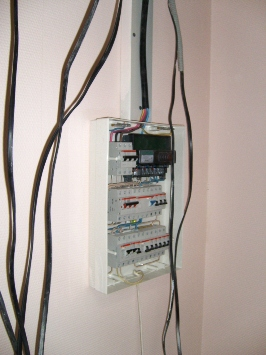

Качественный электромонтаж в Санкт-Петербурге и ленобласти, стаж 12 лет. Частный электрик, недорого и качественно.
Телефон - 8 904 642 08 57. Николай.

Заменить наружную розетку на внутреннюю.
Если в квартире проложена скрытая проводка, то, следовательно, и розетки должны быть скрытыми, то есть вмонтированными в стену. Несмотря на это, в очень многих квартирах со скрытой проводкой установлены наружные розетки. Почему электрик, проводящий установку розеток, не вмонтировал их в стену? Скорее всего, для экономии время и сил. Ведь монтаж наружных розеток не предусматривает долбления стен под коробки с последующим их монтированием. Поскольку наружные розетки редко совместимы с интерьером квартиры, то лучше решить эту проблему, установив внутреннюю розетку. В этой статье мы рассмотрим основные этапы замены наружной розетки на внутреннюю.
Подготовка к работе.
Для начала необходимо подготовиться к данной работе. Так как при долблении стен образуется много мусора и пыли, то необходимо или убрать мебель, одежду и технику из комнаты, или чем-то их накрыть, чтобы не испачкались. Ну и, конечно же, следует заранее подготовить необходимые для замены розетки инструменты и приборы. При замене розетки нам понадобиться следующее:
- новая внутренняя розетка;
- установочная коробка (подрозетник);
- дрель или зубило и молоток;
- алебастр;
- фигурная и индикаторная отвертки.
Демонтаж наружной розетки.
После того, как будет отключен автомат, питающий данную линию, можно приступать к демонтажу наружной розетки. Эта работа не представляет собой ничего сложного, поэтому, чтобы не тратить время, опишу ее суть в двух словах. Сначала индикаторной отверткой проверяем наличие напряжения в сети, ведь автомат мог быть не рабочий. Если все в порядке, то с помощью фигурной отвертки разбираем старую розетку, затем отсоединяем провода. Вот и все, думаю, проблем на данном этапе у вас не возникнет.
Выполнение отверстия под установочную коробку.
Теперь нам необходимо сделать под внутреннюю розетку отверстие в стене. Решить данную задачу можно с помощью дрели, оборудованной специальной насадкой, или же молотком и зубилами. При первом способе все просто: дрелью в стене прорезается окружность необходимых размеров, а затем все лишнее выбивается. Если у вас дома нет дрели, то согласитесь, что для монтажа одной розетки приобретать ее нецелесообразно, поэтому используйте второй способ. Размеры отверстия зависят от размеров установочной коробки. Постепенно выбивая стену, делайте примерку, учитывая при этом, что между коробкой и стеной будет алебастр. Когда отверстие будет готово, можно начинать фиксацию установочной коробки. Для этого лучше всего использовать уже упомянутый алебастр.
Установка коробки под розетку.
В первую очередь нам понадобиться сделать в установочной коробке отверстие, в которое будут заведены провода. Прежде, чем наносить алебастр, необходимо смочить водой коробку и отверстие. Алебастр следует наносить небольшими количествами и на коробку, и в само отверстие. Теперь аккуратно становите коробку, а затем выровняйте ее и оставьте на некоторое время. Время застывания алебастра зависит от его состояния.
Установка и монтаж внутренней розетки.
Перед установкой розетки тщательно зачистьте провода наждачной бумагой, после чего заведите их в коробку через ранее выполненное в ней отверстие. Соедините зачищенные провода с клеммами на розетке. Помещение розетки выполняйте аккуратно, чтобы не повредить проводку. Теперь осталось только зафиксировать новую розетку с помощью специальных усиков и винтов.
Закончив работу, включите автоматический выключатель и убедитесь в работоспособности розетки, включив в нее любой электроприбор.

Сколько стоит монтаж электропроводки в частном доме.
Сколько будут стоить материалы.
Замена электропроводки в панельном доме.
Расценки на электропроводку квартир.
Сделать электрику в новостройке
